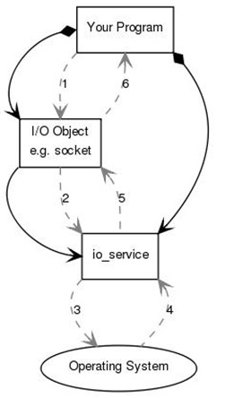
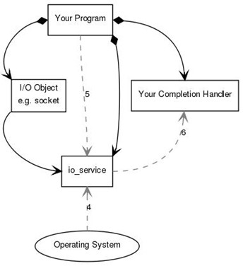

IO模型
io_service 对象是 asio 框架中的调度器，所有异步 IO 事件都是通过它来分发处理的（io 对象的构造函数中都需要传入一个 io_service 对象）。如果对 Boost.Asio 的整体框架还不熟悉，可以先看本站的《Boost.Asio 入门》。
asio::io_service io_service;
asio::ip::tcp::socket socket(io_service);在 asio 框架中，同步的 IO 主要流程如下：

而异步IO的处理流程则有些不同：

io_service对象
io_service 的作用：io_service 实现了一个任务队列，这里的任务就是 void(void) 的函数。io_service 最常用的两个接口是 post 和 run，post 向任务队列中投递任务，run 是执行队列中的任务，直到全部执行完毕，并且 run 可以被 N 个线程调用。io_service 是完全线程安全的队列（多个线程同时调用 run() 的模型可以看本站的《Boost.Asio 多线程模型》）。
io_service 对象提供的接口有 run、run_one、poll、poll_one、stop、reset、dispatch、post，最常用的是 run、post、stop。
可见，io_service 提供的是一个生产者消费者模型。在异步 IO 操作中，需要我们手动控制消费者，调用 run 函数。
io_service 实现代码的基本类结构
- io_service 是接口类，为实现跨平台，采用了策略模式，所有接口均由
impl_type实现。根据平台不同，impl_type分为：- win_iocp_io_service：Win 版本的实现，这里主要分析 Linux 版本。
- task_io_service：非 win 平台下的实现，其代码结构为：
- detail/task_io_service_fwd.hpp：简单声明 task_io_service 名称
- detail/task_io_service.hpp：声明 task_io_service 的方法和属性
- detail/impl/task_io_service.ipp：具体实现文件
- 队列中的任务类型为 operation，原型其实是
typedef task_io_service_operation operation，其实现文件在 detail/task_io_service_operation.hpp 中。当队列中的任务被执行时，就是task_io_service_operation::complete被调用的时候。
io_service::post 方法的实现
post 向队列中投递任务，然后激活空闲线程执行任务。其实现流程如下：
- post 接收 handler 作为参数，实际上是个仿函数，通过此仿函数构造出 completion_handler 对象，completion_handler 继承自 operation。然后调用
post_immediate_completion。 post_immediate_completion首先将outstanding_work_增加，然后调用post_deferred_completion。post_deferred_completion首先加锁将任务入列，然后调用wake_one_thread_and_unlock。wake_one_thread_and_unlock尝试唤醒当前空闲的线程，其实现中特别之处在于：若没有空闲线程，但是有线程在执行task->run，即阻塞在 epoll_wait 上，那么先中断 epoll_wait，执行任务队列完成后再执行 epoll_wait。first_idle_thread_维护了所有当前空闲线程，实际上使用了 Leader/Follower 模式，每次唤醒时只唤醒空闲线程的第一个。
io_service::run 方法的实现
run 方法执行队列中的所有任务，直到任务执行完毕。
- run 方法首先构造一个 idle_thread_info，和
first_idle_thread_类型相同，即通过first_idle_thread_将所有线程串联起来。它这个串联不是立即串联的：当该线程无任务可做时加入到first_idle_thread_的首部，有任务执行时，从first_idle_thread_中断开。这很正常，因为first_idle_thread_维护的是当前空闲线程。 - 加锁，循环执行 do_one 方法，直到 do_one 返回 false。
- do_one 每次执行一个任务。首先检查队列是否为空，若空则将此线程追加到
first_idle_thread_的首部，然后阻塞在条件变量上，直到被唤醒。 - 当被唤醒或首次执行时，若
stopped_为 true（即此时 stop 方法被调用了），返回 0。 - 队列非空，pop 出一个任务；检查队列，若无任务则简单地解锁，若仍有，调用
wake_one_thread_and_unlock尝试唤醒其他空闲线程执行。然后执行该任务，返回 1。 - 实际上在执行队列任务时有一个特别的判断
if (o == &task_operation_)，那么将会执行task_->run。task_ 变量类型为 reactor，在 Linux 平台实现为 epoll_reactor，实现代码文件为 detail/impl/epoll_reactor.ipp，run 方法实际上执行的是 epoll_wait，run 阻塞在 epoll_wait 上等待事件到来，并且处理完事件后将需要回调的函数 push 到 io_service 的任务队列中。虽然 epoll_wait 是阻塞的，但是它提供了 interrupt 函数。该 interrupt 是如何实现的呢？它向 epoll_wait 添加一个文件描述符，该文件描述符中有 8 个字节可读，这个文件描述符是专用于中断 epoll_wait 的，它被封装到 select_interrupter 中。select_interrupter 实际上实现是 eventfd_select_interrupter，在构造的时候通过 pipe 系统调用创建两个文件描述符，然后预先通过 write_fd 写 8 个字节，这 8 个字节一直保留。在添加到 epoll_wait 中时采用 EPOLLET 边缘触发，这样，只要 select_interrupter 的读文件描述符添加到 epoll_wait 中，立即中断 epoll_wait。很是巧妙！实际上就是因为有了这个 reactor，它才叫 io_service，否则就是一个纯的任务队列了。
run 方法的原则是：
- 有任务立即执行任务，尽量使所有的线程一起执行任务。
- 若没有任务，阻塞在 epoll_wait 上等待 IO 事件。
- 若有新任务到来，并且没有空闲线程，那么先中断 epoll_wait，先执行任务。
- 若队列中有任务，并且也需要 epoll_wait 监听事件，那么非阻塞调用 epoll_wait（timeout 字段设置为 0），待任务执行完毕再阻塞在 epoll_wait 上。
- 几乎对线程的使用上达到了极致。
- 从这个函数中可以知道，在使用 ASIO 时，io_service 应该尽量多，这样可以使其 epoll_wait 占用的时间片最多，这样可以最大限度的响应 IO 事件，降低响应时延。但是每个 io_service::run 占用一个线程，所以 io_service 最佳应该和 CPU 的核数相同。
io_service::stop 方法的实现
- 加锁，调用
stop_all_threads。 - 设置
stopped_变量为 true，遍历所有的空闲线程，依次唤醒。 task_interrupted_设置为 true，调用 task_ 的 interrupt 方法。- task_ 的类型为 reactor，在 run 方法中已经做了分析。
从中可以看出，io_service 是一个工作队列的模型。在使用过程中一般有如下几个需要注意的地方：
run 函数在 IO 事件完成后会退出，导致后续基于该对象的异步 IO 任务无法执行
由于 io_service 并不会主动创建调度线程，需要我们手动分配，常见的方式是给其分配一个线程，然后执行 run 函数。但 run 函数在 IO 事件完成后会退出，线程会终止，后续基于该对象的异步 IO 任务无法得到调度。
解决这个问题的方法是通过一个
asio::io_service::work对象来守护 io_service。这样，即使所有 IO 任务都执行完成，run 也不会退出，继续等待新的 IO 任务。boost::asio::io_service io; boost::asio::io_service::work work(io); io.run();回调在 run 函数的线程中同步执行，当回调处理时间较长时阻塞后续 IO 响应
解决这个问题的方法有两种：1. 启动多线程执行 run 函数（run 函数是线程安全的）；2. 新启动一个线程（或通过线程池）来执行回调函数。一般来讲，如果回调处理时间不是特别短，应该使用在线程池中处理回调的方式。
回调在 run 函数的线程中同步执行，IO 事件较多的时候得不到及时响应
这个其实是性能问题了，在多核 CPU 上可以通过在多个线程中执行 run 函数来解决这一问题。这种方式也只能充分利用 CPU 性能，本身性能问题就不是光靠软件就能解决的。
boost::asio::io_service 使用时的注意事项
请让 boost::asio::io_service 和 boost::asio::io_service::work 搭配使用。
想让 event 按照进入 strand 时的顺序被执行，需要 boost::asio::io_service 和 boost::asio::io_service::strand 搭配使用。
一般情况下，io_service 的成员函数的使用顺序：
boost::asio::io_service // 构造 boost::asio::io_service::run()， boost::asio::io_service::stop()， boost::asio::io_service::reset()， boost::asio::io_service::run()， ...... boost::asio::io_service // 析构不论有没有使用 io_service::work，run() 都会执行完 io_service 里面的 event（若没有用 work，run 执行完就会退出）。
一个新创建的 io_service 不需要执行 reset() 函数。
在调用 stop() 之后、再次调用 run() 之前，请先调用 reset() 函数。
函数 stop() 和 reset() 并不能清除掉 io_service 里面尚未执行的 event。我个人认为，也只有析构掉 io_service，才能清空它里面的那些尚未执行的 event（可以用智能指针）。
函数 stop()、stopped()、reset() 很简单，请单步调试，以明白它在函数里做了什么。
boost 的 .hpp 文件里面（一般情况下）有各个函数的使用说明，你可以随时查看。
下面是 boost::asio::io_service 的 stop() 和 reset() 函数的注释的翻译：
void boost::asio::io_service::stop();
BOOST_ASIO_DECL void stop();
/// Stop the io_service object's event processing loop.
/// 停止io_service对象的事件处理循环。
/**
* This function does not block, but instead simply signals the io_service to
* stop. All invocations of its run() or run_one() member functions should
* return as soon as possible. Subsequent calls to run(), run_one(), poll()
* or poll_one() will return immediately until reset() is called.
*/
/**
这个函数不阻塞，而是仅仅表示io_service停止了。
它的run()或run_one()成员函数的调用应当尽快返回。
对run()、run_one()、poll()、poll_one()的随后的调用将会立即返回直到reset()函数被调用了。
*/
void boost::asio::io_service::reset();
BOOST_ASIO_DECL void reset();
/// Reset the io_service in preparation for a subsequent run() invocation.
/// 重置io_service对象，为随后的run()调用做准备。
/**
* This function must be called prior to any second or later set of
* invocations of the run(), run_one(), poll() or poll_one() functions when a
* previous invocation of these functions returned due to the io_service
* being stopped or running out of work. After a call to reset(), the
* io_service object's stopped() function will return @c false.
*
* This function must not be called while there are any unfinished calls to
* the run(), run_one(), poll() or poll_one() functions.
*/
/**
io_service被停止，或者执行完handler而缺乏工作时，run()、run_one()、poll()、poll_one()函数的调用会被返回。
这些函数在被调用之前，必须先调用reset函数。
在reset函数被调用后，io_service对象的stopped函数将会返回false。
当run()、run_one()、poll()、poll_one()函数的任何的调用未结束时，这个函数一定不能被调用。
*/对 stop() 和 reset() 函数的一点说明（是我单步调试时看到的）：
在 Windows 下，boost::asio::io_service 类里面有一个数据成员为 stopped_（Flag to indicate whether the event loop has been stopped.）。它是一个标志，它标志着事件循环是不是被 stopped 了。而 boost::asio::io_service::reset() 函数仅仅是赋值 stopped_ = 0。boost::asio::io_service::stopped() 函数仅仅是判断 0 != stopped_ 的真假。你单步调试一下，就什么都知道了。
下面是我验证 boost::asio::io_service 的一个例子：
#include <boost/asio.hpp>
#include <boost/thread.hpp>
#include <boost/atomic.hpp>
#include <boost/shared_ptr.hpp>
#include <boost/date_time/posix_time/ptime.hpp>
#include <boost/date_time.hpp>//boost::posix_time::to_iso_extended_string()需要此头文件。
#include <iostream>
#include <vector>
//boost::atomic_bool coutFlag = false;
//error C2440: 'initializing' : cannot convert from 'bool' to 'boost::atomics::atomic<bool>'
//故意写错，可以根据错误信息知道某类型的详细信息。
boost::atomic_bool g_coutFlag(false);
boost::atomic_int g_numIn(0);
boost::atomic_int g_numOut(0);
boost::thread_group g_thgp;
boost::asio::io_service g_io;
boost::shared_ptr<boost::asio::io_service::work> g_pWork = \
boost::shared_ptr<boost::asio::io_service::work>(new boost::asio::io_service::work(g_io));
boost::asio::io_service::strand g_strand(g_io);
std::vector<boost::posix_time::ptime> g_vecTimes;
void my_run_4_io_service(boost::asio::io_service& _io, int _idx)
{
_io.run();
//想得到boost::asio::io_service::run()退出时的时刻，只能对io_service进行封装了。
g_vecTimes[_idx] = boost::posix_time::microsec_clock::local_time();
}
void outFun(int idx)
{// io_service执行的handler。
++g_numOut;
if (g_coutFlag.load())
std::cout << "outFun: index=" << idx << std::endl;
boost::this_thread::sleep_for(boost::chrono::milliseconds(500));
}
void inFun()
{
for (int i = 1; i <= 10; ++i)
{
g_strand.post(boost::bind(outFun, i));
++g_numIn;
boost::this_thread::sleep_for(boost::chrono::milliseconds(100));
}
g_coutFlag = true;
g_io.stop();//调用它后，不论io_service有没有使用io_service::work类，各个线程的run()都会立即返回。
g_vecTimes[0] = boost::posix_time::microsec_clock::local_time();
int numDelta = g_numIn - g_numOut;
std::cout << "inFun: numDelta=" << numDelta << std::endl;//还剩多少event没有被执行。
}
int main()
{
int vecNum = 5;
g_vecTimes.reserve(vecNum); g_vecTimes.resize(vecNum);
//一个容纳 void fun(int i) 函数的 function对象。
boost::function<void(int)> my_lambda_function_object = [vecNum](int secs)
{
boost::this_thread::sleep_for(boost::chrono::microseconds(1000 * 1000 * secs));
std::cout << "now, time is " << boost::posix_time::
to_iso_extended_string(boost::posix_time::microsec_clock::local_time()) << std::endl;
for (int i = 0; i < vecNum; ++i)
std::cout << i << " : " << boost::posix_time::to_iso_extended_string(g_vecTimes[i]) << std::endl;
};
for (int i = 1; i < vecNum; ++i)
g_thgp.create_thread(boost::bind(my_run_4_io_service, boost::ref(g_io), i));
g_thgp.create_thread(inFun);
//等待5秒，确保执行完毕我设计的那些操作。
my_lambda_function_object(5);
//析构掉io_service对应的io_service::work对象，此时io_service里面还有event。
g_pWork = nullptr;
boost::this_thread::sleep_for(boost::chrono::milliseconds(1000 * 1));
g_io.reset();
boost::this_thread::sleep_for(boost::chrono::seconds(1));
//因为work被析构掉了，所以启动的那些线程在执行完event后，都自行退出了。
for (int i = 1; i < vecNum; ++i)
g_thgp.create_thread(boost::bind(my_run_4_io_service, boost::ref(g_io), i));
//等待6秒，确保io_service中剩余的event被执行完毕。
my_lambda_function_object(6);
std::cout << "done." << std::endl;
int cmd_val = getchar();
return 0;
}理解了 io_service 的调度原理之后，多线程场景下如何组织 io_service，可以继续阅读本站的《Boost.Asio 多线程模型》。